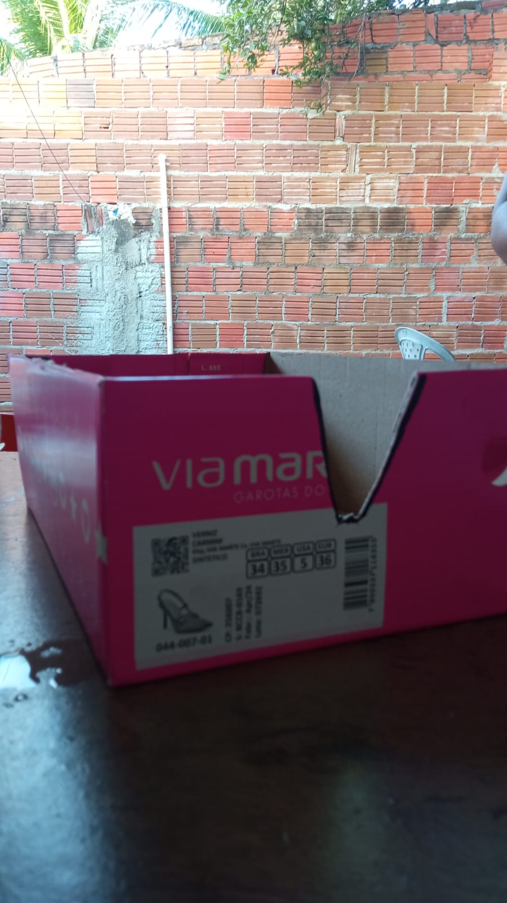

Tutorial - Simulador de Erosão
Um simulador de Erosão para você testar na sua casa!
Baseado na Estação de Pesquisa 2 - Guardando o Relevo
Materiais Necessários:

- 3 Caixa de papelão
- 3 Garrafas PET de 2L
- Tesoura ou estilete (com supervisão de um adulto)
- Terra
- Garrafinha PET de 200mL
- Plantas pequenas ou grama ️
- Gravetos e folhas
- Pratos e vasilhas (No meu caso, utilizei de porcelana, mas se tiver prato fundo descartável fica ainda melhor!)

Instruções:
- Corte um retângulo no meio das três garrafas PET.
- Faça isso com todas as garrafas.
- Corte a tampa da caixa de sapato, e faça um corte na lateral da caixa. 
- Faça isso com todas as caixas.
- Encaixe as garrafas nas caixas.
- Coloque um prato raso dentro da caixa, e um prato fundo fora.
- Na primeira garrafa, coloque somente terra.
- Na segunda garrafa, encha de terra e coloque gravetos e folhas soltas por cima.
- Na terceira garrafa, encha de terra, e coloque algumas plantinhas ou grama.
- Coloque água na garrafinha, e faça vários furos na tampa.
- Despeje a água lentamente no topo de cada garrafa, simulando a chuva.
- Observe a água que sai de cada garrafa e escorre para os pratos.

Resultados
Na primeira garrafa, a água levou muita terra embora, deixando buracos. Isso é a erosão do solo, que acontece quando a chuva forte leva a terra embora, deixando o solo pobre e sem nutrientes.
Na segunda garrafa, a água levou um pouco de terra, mas os gravetos e folhas ajudaram a segurar o solo no lugar. Isso mostra como a cobertura do solo com matéria orgânica pode ajudar a prevenir a erosão.
Na terceira garrafa, a água quase não levou terra, porque as raízes das plantas seguraram o solo no lugar. Isso mostra como as plantas são importantes para proteger o solo da erosão.
Tutorial em vídeo:
Perguntas
1. O que é erosão do solo?
2. Como as plantas ajudam a prevenir a erosão do solo?
3. O que é cobertura do solo?